Большое чудо в маленьком офисе. Часть 2
Давайте, для пользы дела, разобьем нашу задачу на две подзадачи:
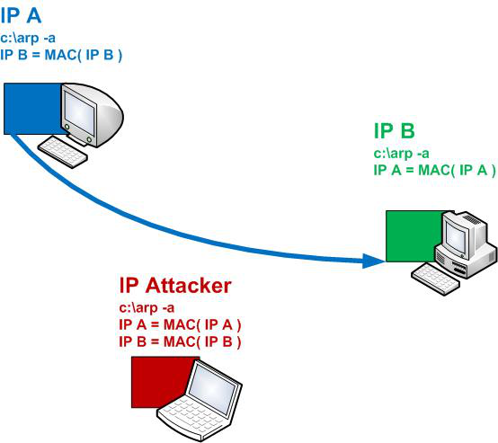 До начала эксперимента, пересядем на машину IPA и пустим пинг на IPB с параметром "-t", т.е. в цикле. Исходник готового решения лежит по пути: "sources/__sheva740/miracle/02/files/arpspoof_sub1/src/arpspoof_sub1.asm" Давайте откроем для начала arpspoof_sub1.asm и пройдемся по основным функциям, в нем содержащимся. Облегчит задачу незамысловатый алгоритм: 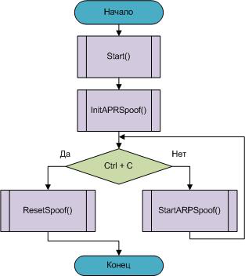 Функция Start ().Итак, перед нами разбор ком. строки. Вы легко отметите то, что если запустить программу без параметров, то выпадет сообщение об ошибке параметра "–i". Параметр "–i" (от слова "interface" )) ) – выведет нумерованный список идентификаторов сетевых интерфейсов, установленных в системе: 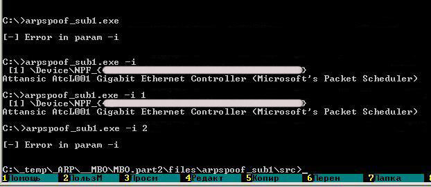 Для получения справки к использованию программы предусмотрен параметр "–h": 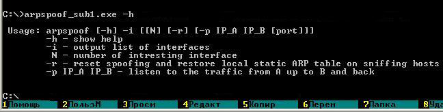 Вот добрались к параметру "–s". За ним должны следовать два IP-адреса,
обозначим их IPA и IPB, причем Далее ВНИМАНИЕ!!! Пока не стоит запускать прогу с этим ключом. Вообще говоря, ничего страшного не произойдет, возможно, просто придется перезагрузиться для того, чтобы очистить локальную arp – таблицу, и всего-то. Так что пока просто проследите за изложением и скриншотами. c:\...\files\arpspoof_sub1\src>arpspoof_sub1.exe -i 1 -s 192.168.1.2 192.168.1.3 При запуске вы же держите перед глазами распечатку, произойдет разбор командной строки. Заполнится частично структура APRSPOOF ‹ ›. Далее запустится инициализация программы, а именно процедура InitSpoof (). Функция InitSpoof ().Целью этой функции будет полное заполнение структуры APRSPOOF ‹ › и дальнейший запуск функции StaticARP() дважды. Для начала распишем назначения полей структуры APRSPOOF ‹ › ARPSPOOF struct ucSelfMAC ;мой локальный МАС szTarget ;IP машины приемника ucTargetMAC ;MAC целевой машины szIP ;IP машины источника ucIPMAC ;MAC машины источника szSelfIP ;мой локальный IP ucPretendMAC ;новый, подменяемый MAC hInterface ;указатель на открытый сетевой интерфейс ARPSPOOF ends Теперь заполним ее поля. ARPSPOOF struct ucSelfMAC ;GetLocalMAC() szTarget ;IPB ucTargetMAC ;GetMAC(IPB) ;SendingARP(IPB) szIP ;IPA ucIPMAC ;GetMAC(IPA) ;SendingARP(IPA) szSelfIP ;GetLocalIP() ucPretendMAC ;GetLocalMAC() hInterface ;pcap_open_live() ARPSPOOF ends Тут будет удобно представить MAC адрес как функцию от его IP. Вот так, например – "у хоста с IP=IPA, его MAC = MAC(IPA)". Это чисто для удобства записи. Из схемы выше сразу видно, как мы заполняем поля этой, важной для нас, структуры. Функция InitARP(), в нашем случае, использует весь арсенал всех этих вспомогательных функций – GetLocalIP(), GetLocalMAC(), GetMAC() … В этом местеповествования можно поискать их в исходнике и бегло ознакомиться. Структура заполнена, теперь двукратный вызов функции StaticARP(). Демонстрационный пример результата работы этой функции можно посмотреть:
Результатом выполнения этих двух вызовов будет установка соответствий в локальных arp-таблицах, которые можно посмотреть по команде "arp -a": 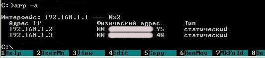 В своей локальной arp – таблице соответствий мы установили соответствие IP-MAC для двух машин. Это правильное соответствие, то есть для IP указанны истинные их MAC-ки. Для подвоха крайне важно знать истинное расположение дел. Итак, мы готовы для проведения атаки типа ARP-spoofing. 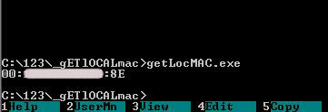 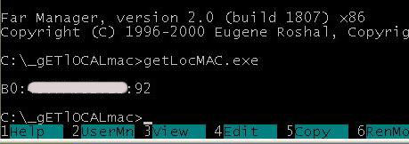 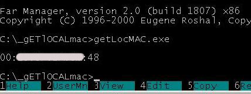 Обойдем все машины и позапускаем ее. Если вы этого не можете сделать в
виду каких-то причин (например, вам лень), воспользуйтесь утилитой: 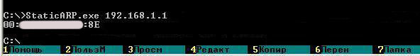 Кажется, с этой все. Перейдем к следующей функции. Функция StartARPSpoof ().Начинаем наши безобразия. )))
Давайте по подробней. Как выполнить эту задачу? Для начала напомним себе структуру ARP – пакета ответа: 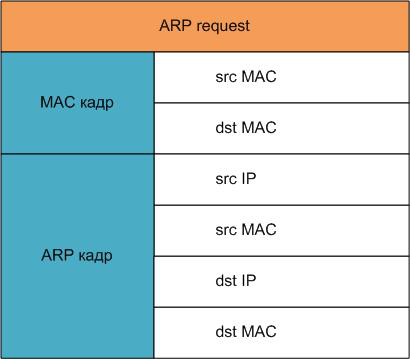 Итак, нам нужно сформировать в потоках "А" и "B" - ARP ответы такого содержания: 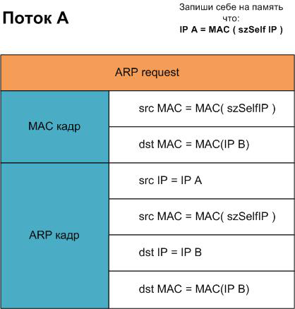 Каждый из потоков отошлет этот пакет с помощью функции SendingARP().
Также, в каждом потоке выполнится функция StaticARP() для сохранения актуальной локальной arp-таблицы. 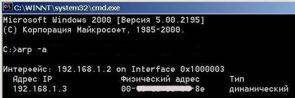 Машина с IPB: 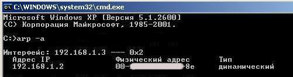 Изобразим теперь работу наших процессов в виде такой симпатичной схемы. Все для лучшего понимания. ))) 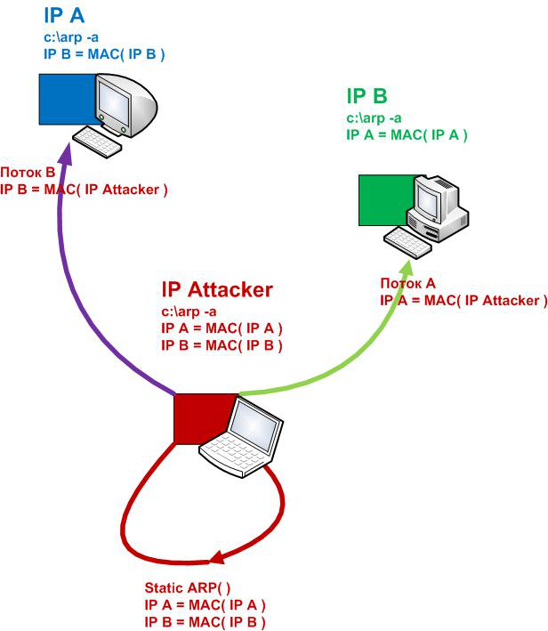 Так вот теперь к главному. Что же случится, если мы захотим все же выполнить программу на данном этапе разработки? Что будет, если мы наберем в ком. строке c:\... \files\arpspoof_sub1\src>arpspoof_sub1.exe -i 1 -s 192.168.1.2 192.168.1.3 …и нажмем Enter? Допустим, мы так и сделали. Что мы увидим? 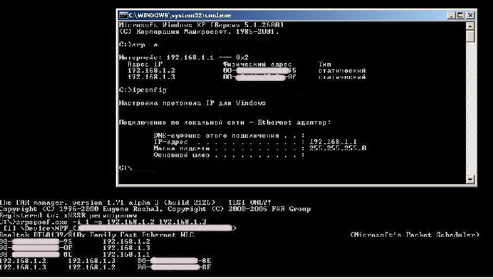 На машине атакующего запустили программу и пересели на IPA. И видим: 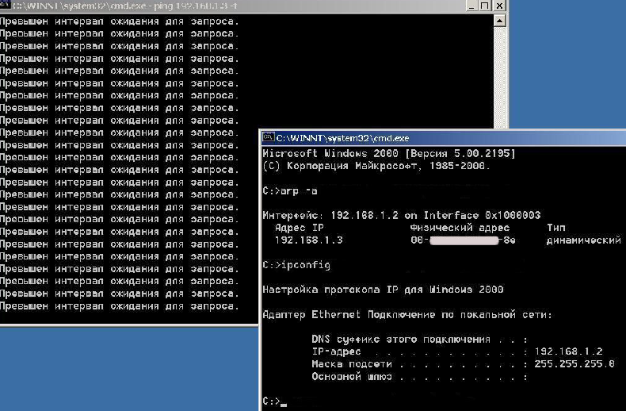 Пинг прекратился! Ура!! Для понимания еще раз посмотрим на схему выше. Раньше, до нашего вмешательства IPA передавала ICMP пакеты на IPB без посредников, а IPB передавало ответы в сторону IPA без посредников. После запуска нашей программы IPA думает, что у машины IPB его MAC = MAC (IPAttack). И соответственно шлет свои пакеты ему. Но что же наш IPAttack? Он действительно получает эти пакеты от IPA? Но отвечать ему на них его никто не учил, потому, сидя на IPA, мы, пуская пинг на IPB, видим как бы обрыв сети. ))) 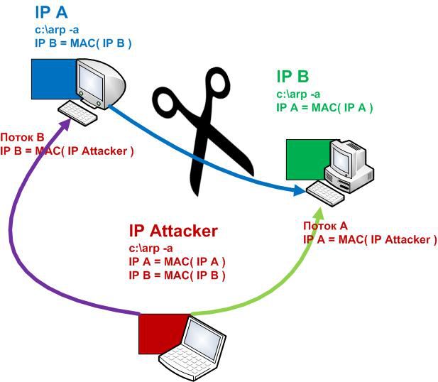 Вот так, сидя в одной локалке, можно “напакостить” соседу. Но что произойдет, если мы прекратим работу программы
arpspoof_sub1.exe на машине IPAttack? Пойдут ли пинги с IPA на IPB как раньше?
Ответ – пойдут, но лучше перезагрузиться , чтобы обнулить ложную информацию в локальных arp-таблицах машин IPA и IPB.
Вот почему полезно было не запускать программу поспешно на данном этапе разработки, о чем мы и предупреждали заранее.
Ну не будем расстраиваться, в следующем шаге мы устраним это неудобство. А пока, не рискуя вас переутомить, раскланяюсь. ))) Исходники: sources/__sheva740/miracle/02/files
|